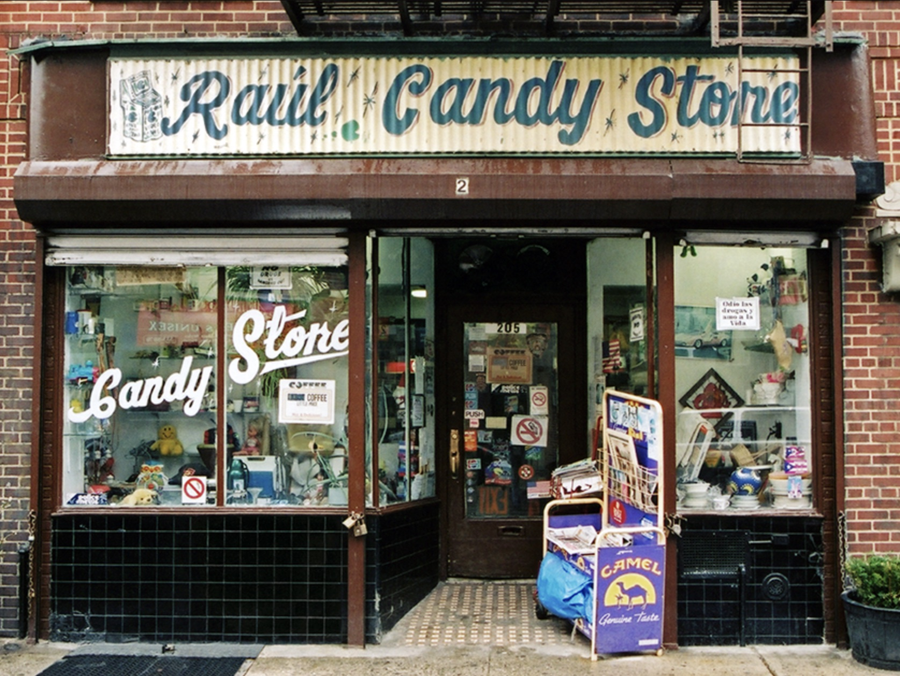

RAUL CANDY STORE LOCATED IN ALPHABET CITY WAS IN BUSINESS SINCE 1979.
The area east of First Avenue between Houston and 14th Street is called Alphabet City because the lettered avenues are named Avenue A, B, C, and D. Until about 1998, this section of the East Village resisted gentrification.
OWNER RAUL SANTIAGO
I opened this candy store in 1979 when this neighborhood was really in trouble. Although things have changed for the better, I still care about the children who live around here and I've al- ways tried to keep the neighborhood kids away from drugs.

WHEN SANTIAGO FIRST OPENED HIS STORE, HE CHARGED A PENNY FOR EACH INDIVIDUAL CANDY.
Their storefront on Avenue B is Raul’s Candy Store’s third location in the area, and they have spent the last 20 years or so doling out gummy eggs and airheads to happy customers. But more than just a candy shop, Raul’s Candy Store was like a second home to many.
"I wish it wasn’t closing. I’m going to miss the store, I’m going to miss hanging out here like the family we are," said Jennifer Rosado, a resident of Alphabet City who has been shopping at the candy shop since she was a child. "It’s going to be sad."
